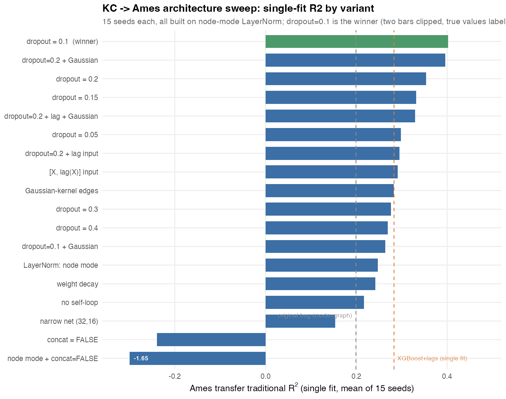
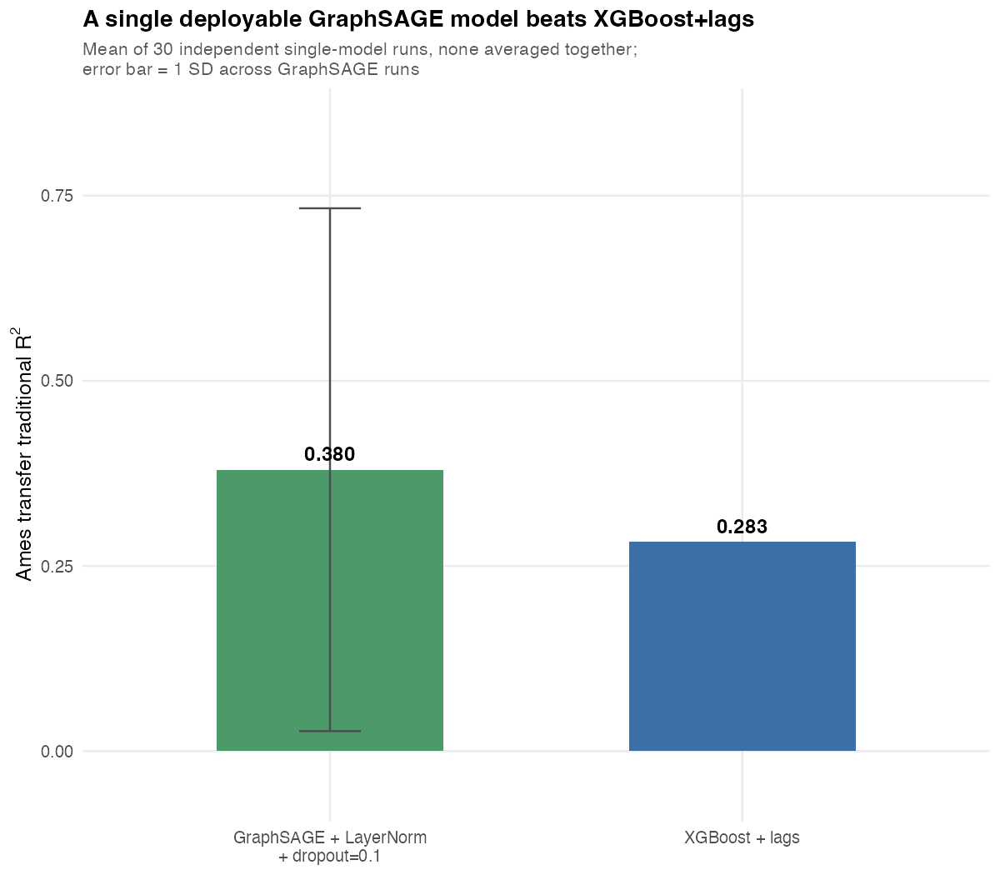
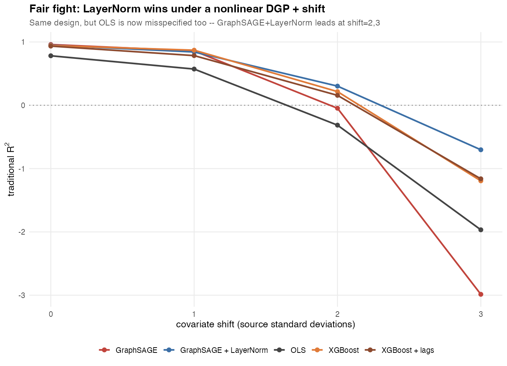

A single GraphSAGE model, fit only on King County and never shown a single Ames house, predicts Ames prices with traditional R² = 0.380 once properly regularized and correctly normalized — beating a single XGBoost + spatial-lags model at 0.283. Two metric bugs had to be found and fixed first. An earlier version of this page reported a prediction-ensemble number (0.583) — withdrawn: averaging multiple trained models together isn't a deployable recipe, so it's not a valid comparison either. The number below is one model, the way it would actually ship.
Every number in this project needed two corrections before it meant what it looked like it meant.
yardstick::rsq is squared Pearson correlation — invariant to a model's predictions being systematically too spread out or offset. A miscalibrated model can still score well on it.
layer_layer_norm(dim) defaults to mode="graph" — one shared scalar mean/variance for the whole graph per layer, not the per-node normalization every call site assumed it was doing.
18 variants, 15 seeds each, all measured on the real Ames transfer. One hypothesis (starving the model of its own node features to force it to "use the graph") made things catastrophically worse and was ruled out; regularization was the actual answer.

Dropout has a clear optimum, not a monotonic effect — 0.05 < 0.1 > 0.15 > 0.2 > 0.3 > 0.4. Feeding the model
[X, lag(X)] directly, or weighting edges by a Gaussian
distance kernel, both helped somewhat on their own but never beat plain
dropout, and stacking them on top of the dropout=0.1 optimum made it
worse, not better.
One trained model, not several averaged together. 30 independent training runs were used only to characterize what a single deployed fit typically does — the same way a cross-validation loop would — never to build a combined predictor.

| mean of 30 independent single-model fits | MAE | RMSE | R²trad | spread (sd) |
|---|---|---|---|---|
| GraphSAGE + LayerNorm(node) + dropout=0.1 | 0.255 | 0.321 | 0.380 | 0.353 |
| XGBoost + lags | 0.272 | 0.345 | 0.283 | — |
The margin is real, but so is the spread: rsq_trad=0.353 sd means the specific model you train and ship could land well above or below 0.380 depending on initialization alone. That variance should be reported honestly in the paper, not averaged away by blending multiple models — a real ArcGIS Pro tool ships one model.
A first synthetic stress test (linear DGP, pure location shift) did not reproduce the win: XGBoost+lags stayed slightly ahead of GraphSAGE+LayerNorm at every shift level. The reason turned out to be a confound, not a contradiction — a purely linear relationship under an additive shift is OLS's best possible case by construction, so it wasn't a fair fight to begin with.

Rerun with a nonlinear DGP so OLS no longer gets a free pass, and the result flips to match the real data: GraphSAGE+LayerNorm is clearly the best of all five arms at shift=2 (0.303 vs. XGBoost's 0.216) and shift=3 (−0.703 vs. XGBoost's −1.193), while plain GraphSAGE remains the least stable, crashing hardest of all five. Single-fit, matching how it would actually ship.
states.R, simulate-block.R and simulate-random.R were all rerun with the node-mode LayerNorm fix. Same story everywhere: LayerNorm helps specifically when the held-out graph is structurally different from the training graph (KC→Ames; block-design Scenario C at high spatial autocorrelation) and is flat-to-negative when it's just a same-distribution held-out sample (states leave-one-out; random-design Scenario C at the identical setting). Full breakdown in REPORT.md sections 10–12.